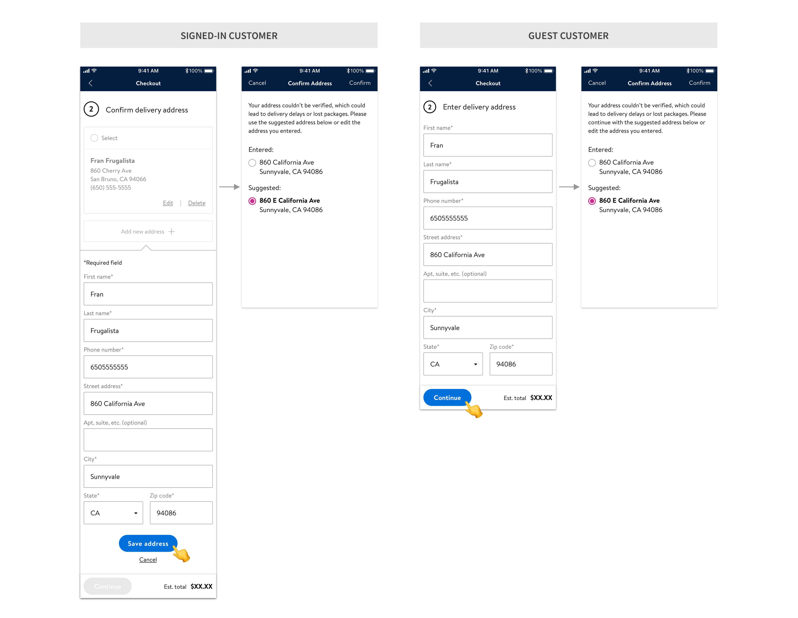

Enabling effective preventive maintenance through IoT
user-centered process · interactive prototype · proof of concept
My role
Product design co-op
Cross-functional team
R&D, Tyler center, facilitiy, the design co-op team
Overview
Coffee is 99% water. As the biggest coffee chain in the world, Starbucks has been serving customers beverages with high-quality water by implementing best-in-class water filtration system.
With the goal of maximizing the system’s uptime to reduce repair costs and customer experience interference, Starbucks has prioritized IoT integration on their water filtration system in core retail stores. The data retrieved from Internet of Things sensors can help to understand the use cases of each alliance and determine if a piece of equipment needs preventive maintenance to achieve fix-before-failure.
Opportunity
In Spring 2019, I had an opportunity to join Starbucks as a product design co-op with 3 other peers from Indiana University. Within 4 months, we delivered a proof of concept solution to help Starbucks envision making effective preventive maintenance happen by leveraging solid data profile streamed from IoT. Adopting a user-centered design process, we delivered a set of dashboards to enable all subject matter stakeholders to get their job done at the core of delivering a fix-before-failure transformation.

My team presenting our final deliverables to Starbucks stakeholders
Secondary research: collective work
From day 1, my co-op team was ready to design to make an impact. Knowing this would be a tremendous opportunity for practicing solving a complex business problem while growing limbs in an emerging technology field, we kicked off with a solid start. We spent the first 1/3 of our bandwidth to deep dive into the multifaceted contexts to define the design scope. Worked closely with stakeholders from corporate facilities, R&D, and Starbucks Tryer Center Innovation Lab, we were able to navigate through a range of relevant domains through secondary research and UX benchmark.

The companies we consulted for UX benchmark in IoT and water filtration domains
My design focus: Starbucks Store Partners
We identified 4 main user groups and split the design work based on user scenarios. Corporate Facilities, R&D, Store Partners and Facilities Contact Center (FCC) - each of their job responsibilities holds high dependencies on the transformation of preventive maintenance on water filtration system. From there, I started to flex my problem-solving muscles, following a user-centered design approach to understand what a Starbucks store partner’s daily jobs look like.
User interview & Contextual Inquiry
With my team, I visited one Starbucks store in Crystal Lake IL to see the fascinating IoT system working in action, and, more importantly, I was able to conduct a brief contextual inquiry to get in the shoes of a store partner. I also interviewed 4 store managers to understand their team structure, day-to-day duties, and their current experience with equipment maintenance.

Click to enlarge - 1) Value proposition for store partners; 2) Store partner's involvement in resolving a reactive maintenance
User journey & pain points in current maintenance
On top of providing good customer services, another main duty for a store partner is to request reactive maintenance from Facilities Contact Center (FCC) to fix equipment malfunctioning. However, their mindshare is highly demanded in that process regardless of their work experience, which increases opportunity cost for better customer engagement.

Click to enlarge - Store partner's journey and pain points of requesting a reactive maintenance
Opportunities for store partners in IoT maintenance
At a high level, the biggest impact by IoT implementation is to access historical and real-time data streamed from the water filtration system to better understand the equipment use case and usage trend, predict failures, and therefore manage preventive investigation and maintenance ahead of a real breakdown.
After several rounds of deep-dive and (hardcore) brainstorming with my team and stakeholders, I identified key opportunities to alleviate store partners’ mindshare during the engagement in the upgraded fix-before-failure maintenance process.

Ideation
I initiated lots of critique sessions with my design team and cross-functional partners to capture their feedback during the ideation and iteration. These syncs really helped me to grow as a designer, learning from the team, speaking up for my design decisions, and pushing back as a UX advocate.

Iterations & key design decisions
Caveat
After mapping out the checkout flow for both return and guest customers, a navigation inconsistency issue caught my eyes.
Further iterations

Final solution
Taking all into account, I had another round of design iteration and came up with a solution that got all the stakeholders on board. I proposed to turn the validator from an in-page component to a standalone modal. A modal simplifies the information hierarchy, which really helps to explain the complicated navigation logic between the main and sub checkout flows.

What's next
I delivered a full stack of annotated design specs and handed to the engineering team for development; 6 address validation use cases with 2 customer across responsive web and native apps. As a wrap, I contributed to the VQA session and identified several key front-end discrepancies before rolling out the new design. While this feature is being A/B tested, let’s stay tuned for the results and impact :)